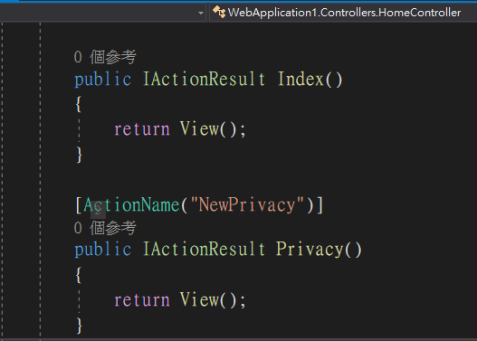
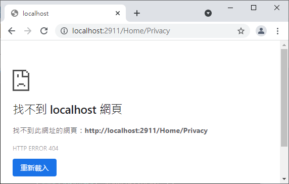
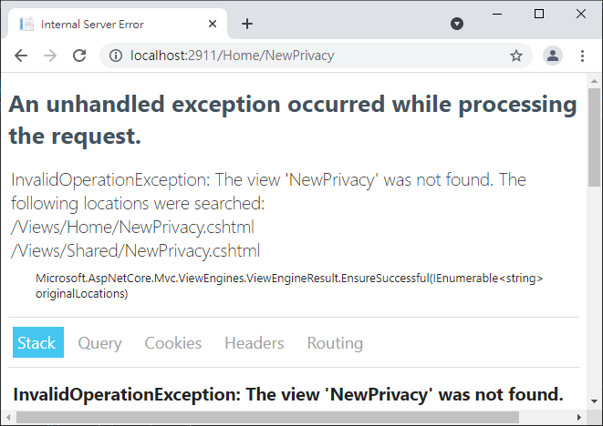

內容包含動作選擇器(ActionName、NonAction、ActionVerbs)，敘述如下：
[ActionName("別名")] 如下圖(請思考如何修正第三張圖錯誤)：



[NonAction] 。
HttpGet、HttpPost、HttpPut、HttpDelete ，例如同樣的動作名稱，但是要因應不同的HTTP模式或是代入參數數目執行不同的動作。
public IActionResult Privacy()
{
return View();
}
[HttpGet("{id:int}")]
public IActionResult Privacy(int id)
{
return View("Index");
}